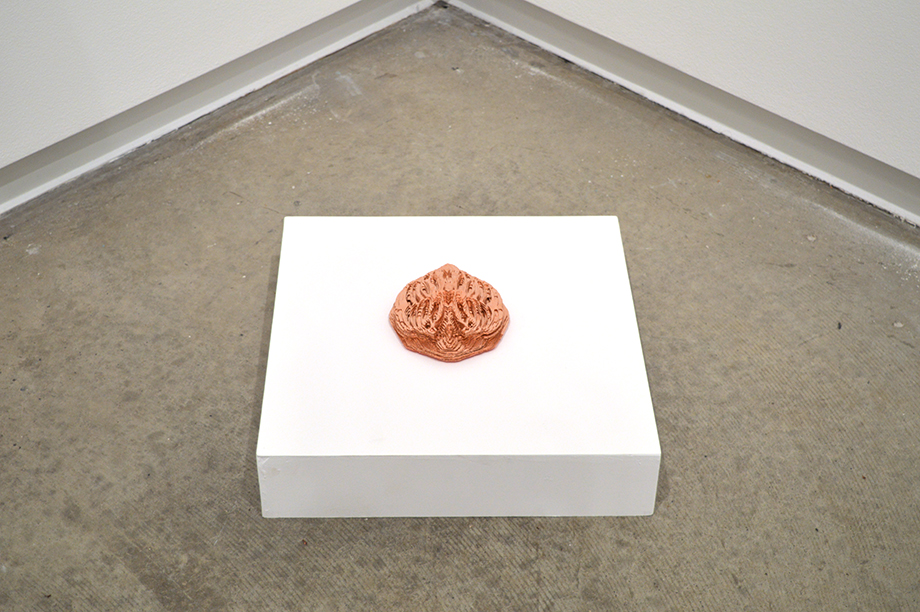

2015
Copper Plates.
6” x 5” x 2”
Using a poem written In 1942 by a new Irish Immigrant as both source material for pattern, form and installation, this piece uses technology as a mediator for novel ways of reimaging family lineage. Reflecting the vibrant call that a discarded rose had to the poems author, this piece uses copper its small size and position near the ground to first came to Toronto. It was in his new home and strange new city that he observed a trampled rose on a busy street and wrote his work ‘A discarded Rose’. Using the original handwritten poems’ script as a line in a program that extrudes depth and pattern, this piece was made with the source material and its installation, materiality and form reflected on the content of the written work. All of the layers of the copper piece sit unsecured to each other, creating depth and moments of incredible shine when reflecting lights from around the room. When approaching this piece in a space it is only from certain angles that it is vibrant and calls to the viewer to look closer.
